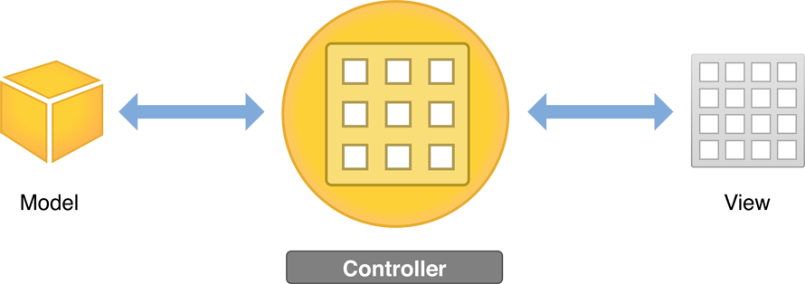
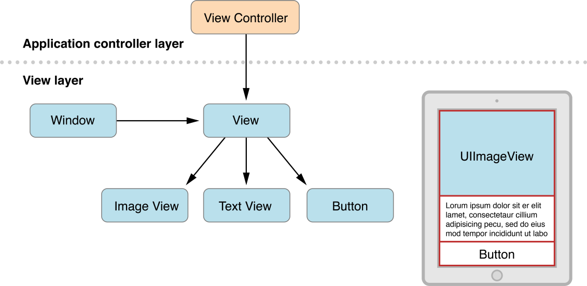
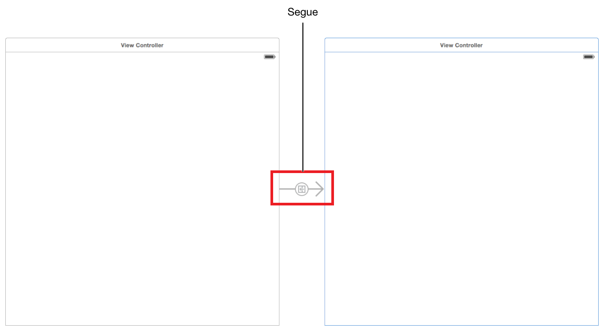

讲解应用程序内视图，事件，action，Outlets 之间如何交互。
Defining the Interaction
应用程序是基于事件驱动编程，事件的作用，用户 action 和 response action。
视图控制器定义大量事件逻辑，视图控制器是响应 view 的 action 的对象和把视图填充为内容。
视图对象是一个管道，视图通过它与数据模型交互。 视图通过应用程序的控制器知道模型数据的更改。
无论是响应用户 actions 或所定义的导航，由视图控制器负责实现这些行为。
iOS apps are based on event-driven programming. That is, the flow of the app is determined by events: system events and user actions. The user performs actions on the interface, which trigger events in the app. These events result in the execution of the app’s logic and manipulation of its data. The app’s response to user action is then reflected back in the interface. Because the user, rather than the developer, is in control of when certain pieces of the app code get executed, you want to identify exactly which actions a user can perform and what happens in response to those actions.
You define much of your event-handling logic in view controllers. Controllers are objects that support your views by responding to user actions and populating the views with content. Controller objects are a conduit through which views interact with the data model. Views are notified of changes in model data through the app’s controllers, and controllers communicate user-initiated changes—for example, text entered in a text field—to model objects. Whether they’re responding to user actions or defining navigation, controllers implement your app’s behavior.

View Controllers
视图控制器管理内容视图与它的子视图的层次结构。
视图控制器不是视图层次结构的一部分，它也不是界面中的元素。它管理层次结构中的视图并提供它们的行为。
每个视图层次结构都需要一个相应的视图控制器，负责管理界面元素和响应用户交互。
这意味着需要为每一个内容视图层次结构写一个自定义 UIViewController 类的子类。
要定义应用程序中的交互，需要使故事板中的视图控制器文件与视图进行通信。通过 actions 和 outlets 定义故事板和源代码文件之间的连接达成这个目的。
After you’ve built a basic view hierarchy, your next step is to control the visual elements and respond to user input. In an iOS app, you use a view controller (UIViewController) to manage a content view with its hierarchy of subviews.

A view controller isn’t part of the view hierarchy, and it’s not an element in your interface. Instead, it manages the view objects in the hierarchy and provides them with behavior. Each content view hierarchy that you build in your storyboard needs a corresponding view controller, responsible for managing the interface elements and performing tasks in response to user interaction. This usually means writing a custom UIViewController subclass for each content view hierarchy. If your app has multiple content views, you use a different custom view controller class for each content view.
View controllers play many roles. They coordinate the flow of information between the app’s data model and the views that display that data, manage the life cycle of their content views, and handle orientation changes when the device is rotated. But perhaps their most obvious role is to respond to user input.
You also use view controllers to implement transitions from one type of content to another. Because iOS apps have a limited amount of space in which to display content, view controllers provide the infrastructure needed to remove the views of one view controller and replace them with the views of another.
To define interaction in your app, you make your view controller files communicate with the views in your storyboard. You do this by defining connections between the storyboard and source code files through actions and outlets.
Actions
要定义 action，通过创建和实现一个方法，使用 IBAction 返回类型并带有一个 sender 参数。
sender 参数指向负责触发 action 的对象。
IBAction 是特殊关键字，类似 void，但是它可以说明该方法是 action，使你可以在界面构造器中的故事板连接它们 (这也是 IB 前缀的原因)。
An action is a piece of code that’s linked to an event that can occur in your app. When that event takes place, the code gets executed. You can define an action to accomplish anything from manipulating a piece of data to updating the user interface. You use actions to drive the flow of your app in response to user or system events.
You define an action by creating and implementing a method with an IBAction return type and a sender parameter.
1 | - (IBAction)restoreDefaults:(id)sender; |
The sender parameter points to the object that was responsible for triggering the action. The IBAction return type is a special keyword; it’s like the void keyword, but it indicates that the method is an action that you can connect to from your storyboard in Interface Builder (which is why the keyword has the IB prefix). You’ll learn more about how to link an IBAction action to an element in your storyboard in Tutorial: Storyboards.
Outlets
Outlets 连接源文件中故事板的对象。
将故事板中的对象按住 Control 拖动到视图控制器源文件中可以为你生成属性 (源代码编辑窗口)。
Outlets provide a way to reference interface objects—the objects you added to your storyboard—from source code files. To create an outlet, Control-drag from a particular object in your storyboard to a view controller file. This operation creates a property for the object in your view controller file, which lets you access and manipulate that object from code at runtime. For example, in the second tutorial, you’ll create an outlet for the text field in your ToDoList app to be able to access the text field’s contents in code.
Outlets are defined as IBOutlet properties.
1 | @property (weak, nonatomic) IBOutlet UITextField *textField; |
The IBOutlet keyword tells Xcode that you can connect to this property from Interface Builder. You’ll learn more about how to connect an outlet from a storyboard to source code in Tutorial: Storyboards.
Controls
Controls 让你的代码可以从用户界面接收信息。
用户与界面交互时，产生 control event。
用户可以在 control 上做各种物理手势，产生 control event。例如上划，拖动，按下。
三种常见的 control event 分类：触摸和拖动事件，编辑事件，值更改事件。
A control is a user interface object such as a button, slider, or switch that users manipulate to interact with content, provide input, navigate within an app, and perform other actions that you define. Controls enable your code to receive messages from the user interface.
When a user interacts with a control, a control event is created. A control event represents various physical gestures that users can make on controls, such as lifting a finger from a control, dragging a finger onto a control, and touching down within a text field.
There are three general categories of control events:
- Touch and drag events occur when a user interacts with a control with a touch or drag. When a user initially touches a finger on a button, for example, the Touch Down Inside event is triggered; if the user drags out of the button, the respective drag events are triggered. Touch Up Inside is sent when the user lifts a finger off the button while still within the bounds of the button’s edges. If the user has dragged a finger outside the button before lifting the finger, effectively canceling the touch, the Touch Up Outside event is triggered.
- Editing events occur when a user edits a text field.
- Value-changed events occur when a user manipulates a control, causing it to emit a series of different values.
As you define the interactions, know the action that’s associated with every control in your app and then make that control’s purpose obvious to users in your interface.
Navigation Controllers
如果应用程序有一个以上的内容视图层次结构，则需要在它们之间转换，需要用到特殊的视图控制器：navigation controller
通过特殊的导航控制器管理的视图控制器集合被称为 navigation stack，是一个后进先出的自定义视图控制器对象集合。
第一个被添加到导航堆栈的被称为 root view controller,并且它永远不会退出堆栈。
导航控制器的主要工作是管理内容视图控制器的呈现。它也负责呈现属于它自己的自定义视图，如提供用户当前在堆栈中位置的屏幕顶部导航栏，包含按钮和其它你的自定义按钮。
If your app has more than one content view hierarchy, you need to be able to transition between them. For this, you’ll use a specialized type of view controller: a navigation controller (UINavigationController). A navigation controller manages transitions backward and forward through a series of view controllers, such as when a user navigates through email accounts, inbox messages, and individual emails in the iOS Mail app.
The set of view controllers managed by a particular navigation controller is called its navigation stack. The navigation stack is a last-in, first-out collection of custom view controller objects. The first item added to the stack becomes the root view controller and is never popped off the stack. Other view controllers can be pushed on or popped off the navigation stack.
Although a navigation controller’s primary job is to manage the presentation of your content view controllers, it’s also responsible for presenting custom views of its own. Specifically, it presents a navigation bar—the view at the top of the screen that provides context about the user’s place in the navigation hierarchy—which contains a back button and other buttons you can customize. Every view controller that’s added to the navigation stack presents this navigation bar. You are responsible for configuring the navigation bar.
You generally don’t have to do any work to pop a view controller off of the navigation stack; the back button provided by the navigation controller handles this for you. However, you do have to manually push a view controller onto the stack. You can do this using storyboards.
Use Storyboards to Define Navigation
大部分应用程序的故事板包含场景的序列 场景之间通过 segue 连接。
Present modally 类型的 segue，由 presenting 视图控制器负责 dismissing 它所创建和呈现的视图控制器。
除了 segues，scenes 也可能通过 relationship 连接。例如导航控制器和根视图控制器之间的关系，表示由导航控制器容纳根视图控制器的关系。
So far, you’ve learned about using storyboards to create a single screen of content in your app. Now, you’ll learn about using them to define the flow between multiple scenes in your app.
In the first tutorial, the storyboard you worked with had one scene. In most apps, a storyboard is composed of a sequence of scenes, each of which represents a view controller and its view hierarchy. Scenes are connected by segues, which represent a transition between two view controllers: the source and the destination.

There are several types of segues you can create in a storyboard:
- Show. A show segue pushes new content on top of the current view controller stack. Where the content shows up depends on the layout of view controllers in the scene.
- Show detail. A show detail segue either pushes new content on top of the current view controller stack or replaces the content that’s shown, depending on the layout of view controllers in the scene.
- Present modally. A modal segue is one view controller presenting another controller modally, requiring a user to perform an operation on the presented controller before returning to the main flow of the app. A modal view controller isn’t added to a navigation stack; instead, it’s generally considered to be a child of the presenting view controller. The presenting view controller is responsible for dismissing the modal view controller it created and presented.
- Popover presentation. The presented view controller is shown as a popover anchored to an existing view.
- Custom. You can define your own custom transition by subclassing UIStoryboardSegue.
- Unwind. An unwind segue moves backward through one or more segues to return the user to an existing instance of a view controller. You use unwind segues to implement reverse navigation.
In addition to segues, scenes may be connected by a relationship. For example, there’s a relationship between the navigation controller and its root view controller. In this case, the relationship represents the containment of the root view controller by the navigation controller.
Now that you’ve learned the basics of working with views and view controllers in storyboards, it’s time to incorporate this knowledge into your ToDoList app in the next tutorial.